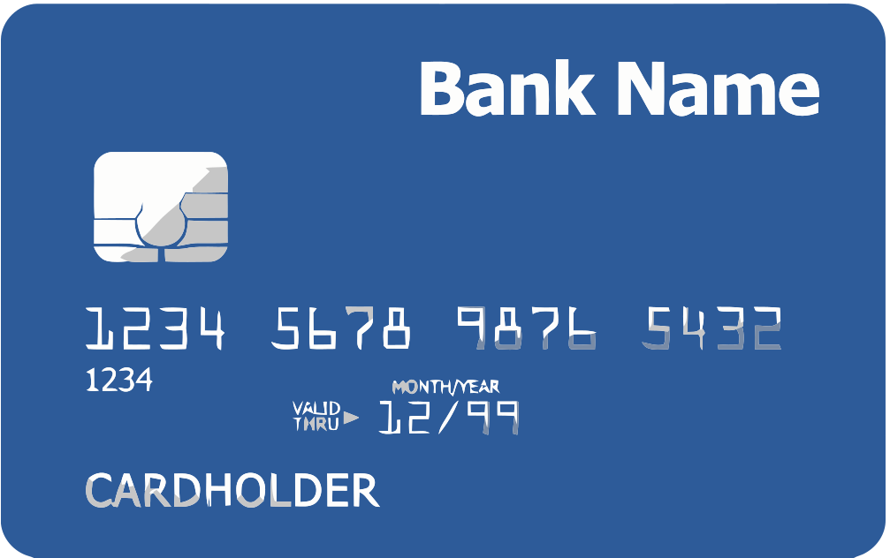
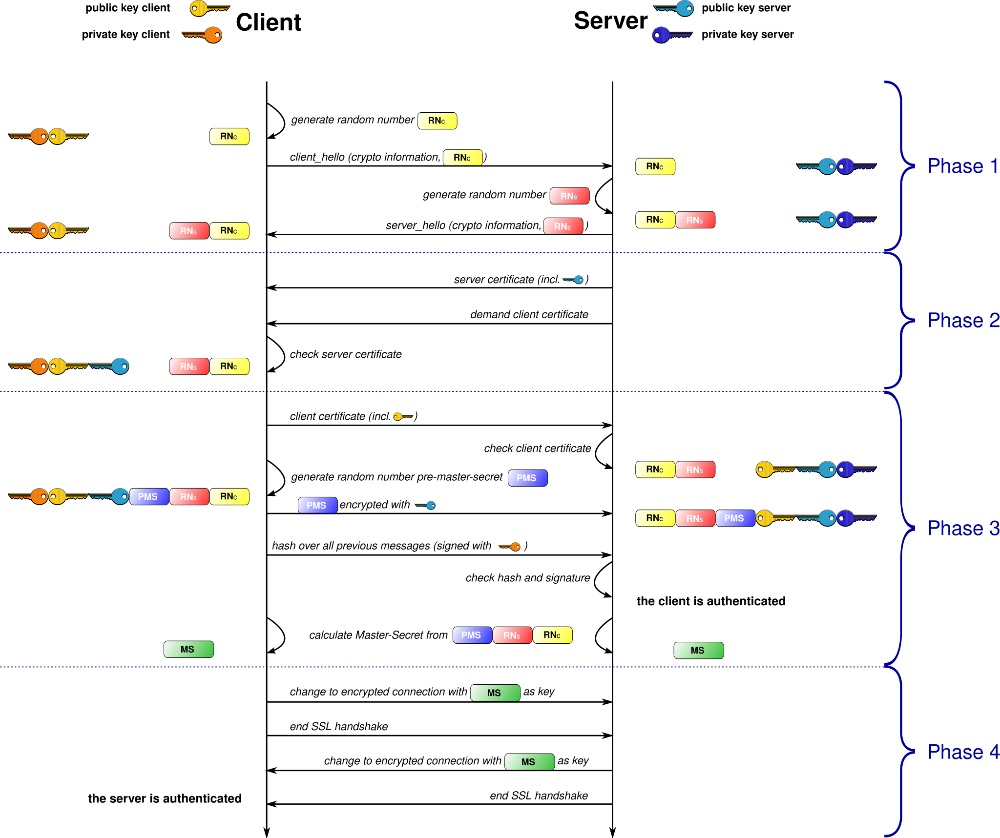

Advanced Web Concepts
Online Shopping and Payments
Watch & Learn
- How We Got Hooked on Credit Cards (TED-Ed, 5 min)
- SSL, TLS, HTTPS Explained (PowerCert, 12 min)
- How Does Cryptocurrency Work? (Simply Explained, 6 min)
- How Does HTTPS Work? What’s a CA? What’s a Self-Signed Certificate? (8 min)
Video Quiz
In the TED-Ed video about credit cards, what key financial invention from the 1950s paved the way for modern credit cards?
In the TED-Ed video, what does the narrator say credit card companies earn revenue from, besides interest on unpaid balances?
In the PowerCert video about SSL/TLS, what is the primary purpose of the “handshake” that happens at the start of an HTTPS connection?
According to the Simply Explained video on cryptocurrency, what technology records every cryptocurrency transaction in a tamper-proof way?
In the Simply Explained cryptocurrency video, what does “mining” refer to?
In the HTTPS video, what role does a Certificate Authority (CA) play in securing a website?
Theory
How Online Payments Work
When you tap “Buy Now” on an online store, a chain of invisible steps fires off in less than two seconds. First, the store’s website sends your card details to a payment gateway — a service that encrypts the data and forwards it to a payment processor. The processor contacts the card network (such as Visa or Mastercard), which routes the request to your issuing bank — the bank that gave you the card.
Your bank checks whether you have enough funds and whether the transaction looks legitimate. If everything is in order, it sends back an approval code. That code travels the reverse path — card network, processor, gateway — and finally the store shows you a “Payment Successful” page. The actual money transfer (called settlement) happens later, usually within one to two business days.

Credit Cards, Digital Wallets, and Cryptocurrency
A credit card lets you borrow money from a bank to pay for goods now and repay later. A debit card does the same thing but pulls directly from your bank account — no borrowing involved. Both use the same gateway-processor-network chain described above.
Digital wallets like Apple Pay, Google Pay, and PayPal add an extra layer: instead of sending your real card number, they generate a one-time token — a random substitute number that only works for that single transaction. Even if a hacker intercepts the token, it is useless for future purchases.
Cryptocurrency like Bitcoin and Ethereum works differently: there is no bank in the middle. Transactions are verified by a network of computers and recorded on a blockchain — a shared, tamper-proof ledger. Crypto payments are irreversible, which is both a feature (no chargebacks) and a risk (if you send to the wrong address, the money is gone).

How Your Payment Data Stays Encrypted
Every time you enter a card number on a website that starts with https://, your browser and the server perform a “handshake” using TLS (Transport Layer Security, the successor to the older SSL). During this handshake they agree on a secret key and from that point on, every byte of data traveling between them is scrambled — unreadable to anyone who intercepts it.
The padlock icon in your browser’s address bar confirms the connection is encrypted and the server has a valid TLS certificate issued by a trusted certificate authority. Reputable online stores also comply with PCI DSS (Payment Card Industry Data Security Standard), a set of rules that dictates how card data must be stored, processed, and transmitted. Stores that meet PCI DSS never keep your full card number on their own servers — they let the payment gateway handle it.

Red Flags of Fake Online Stores
Internet fraud from fake online stores is booming. Here are the warning signs to watch for:
- The URL looks suspicious —
misspellings like “amaz0n.com,” unusual extensions like
.shopor.top, or extra words added to a brand name. - Prices that are too good to be true. A brand-new console for 80% off is almost certainly a scam.
- No real contact information — no physical address, no phone number, no verifiable business name.
- Only irreversible payment methods accepted: wire transfers, gift cards, or cryptocurrency. Legitimate stores accept credit cards because they know buyers can dispute a charge.
- Poor grammar, stock photos used as product images, and a website that looks like it was thrown together overnight.
- No privacy policy or terms of service pages, or ones that are copied word-for-word from another site.
If you suspect a store is fake, search its name plus the word “scam” or “review.” Use tools like ScamAdviser to check a site’s trust score. And always pay with a credit card rather than a debit card — credit cards have stronger buyer protection that lets you dispute fraudulent charges and get your money back.
Theory Quiz
What is the role of a payment gateway in an online purchase?
How does a digital wallet like Apple Pay protect your real card number?
Why is paying with cryptocurrency riskier than using a credit card when shopping online?
What does the padlock icon in your browser’s address bar tell you?
Which of the following is a red flag that an online store might be fake?
Build: “Fake Store Detector”
Create an HTML/CSS/JS page that displays 6 online store descriptions — 3 legitimate and 3 fake. Each description is a card showing the store’s name, URL, pricing, payment methods, and a short “About Us” blurb. Some cards contain hidden red flags (suspicious URLs, absurd discounts, no contact info, only irreversible payment methods, poor grammar).
- Display all 6 store cards on the page. Each card has several clickable elements (URL, price, payment method, contact info, about text).
- The user reads each card and clicks on elements they think are red flags.
- Clicked elements toggle a “flagged” highlight (e.g., a red outline).
- A “Check My Answers” button at the bottom scores the result: correct flags found, missed flags, and false flags.
- After checking, each card shows a detailed explanation of why it is legitimate or fake, listing every red flag the user should have spotted.
Example store cards:
-
“TechDeals Planet” —
techdeals-planet.shop— brand-new laptops at 90% off — only accepts gift cards — no phone number or address listed (fake) -
“BookNook” —
booknook.com— reasonable prices — accepts credit cards and PayPal — verified address and phone number (legitimate) -
“SneakerVaullt” —
sneakervaullt.top— misspelled name — designer shoes at 85% off — only accepts cryptocurrency (fake)
Requirements:
- 6 store cards total (3 legit, 3 fake), each with 4–5 clickable data points
- CSS styling: cards in a grid, flagged elements highlighted in red
- A “Check My Answers” button that scores the user’s choices
- After scoring, show a detailed explanation panel below each card
- Display a final score: e.g., “You found 7 out of 10 red flags!”
Solve it in JSFiddle:
Open JSFiddlePaste your HTML into the HTML panel, CSS into the CSS panel, and JS into the JavaScript panel. Click “Run” to see the result!